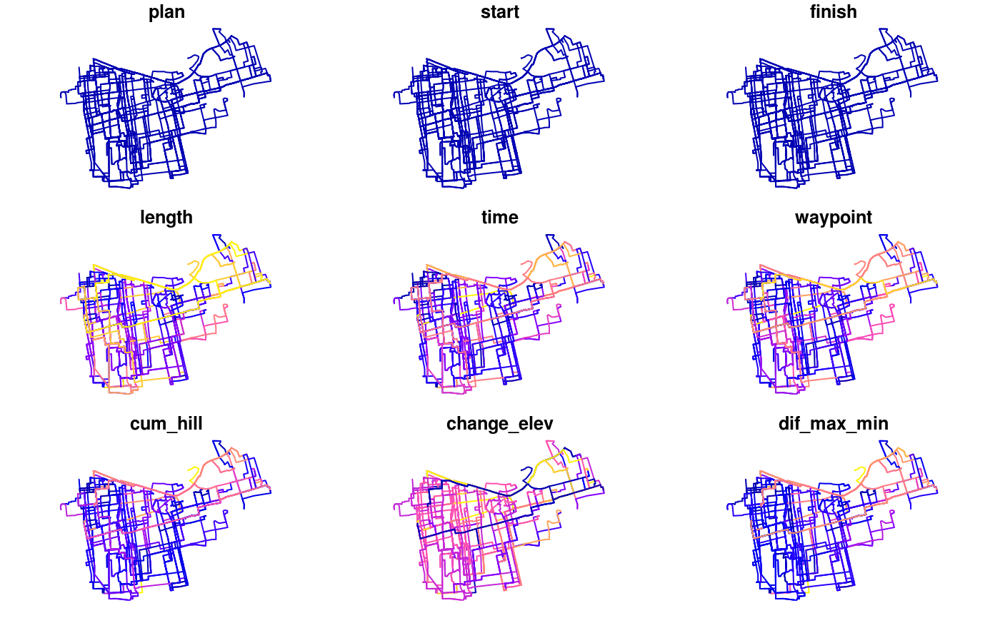

This data was obtained using code shown in the International application of the PCT methods vignette.
names(santiago_routes_cs)#> [1] "plan" "start" "finish" "length" "time" #> [6] "waypoint" "cum_hill" "change_elev" "dif_max_min" "up_tot" #> [11] "down_tot" "av_incline" "co2_saving" "calories" "busyness" #> [16] "error" "id" "geometry"head(santiago_routes_cs)#> Simple feature collection with 6 features and 17 fields #> geometry type: LINESTRING #> dimension: XY #> bbox: xmin: -70.66615 ymin: -33.46904 xmax: -70.64454 ymax: -33.43019 #> epsg (SRID): 4326 #> proj4string: +proj=longlat +datum=WGS84 +no_defs #> plan start finish length time waypoint cum_hill change_elev dif_max_min #> 1 1 1 1 4920 1347 68 88 -34 45 #> 2 1 1 1 1130 526 22 41 7 13 #> 3 1 1 1 1508 574 28 52 -8 15 #> 4 1 1 1 904 268 12 8 4 5 #> 5 1 1 1 1455 343 19 12 -4 7 #> 6 1 1 1 3220 1082 64 83 -15 31 #> up_tot down_tot av_incline co2_saving calories busyness error id #> 1 27 61 0.017886179 917 66 10118 <NA> 1 #> 2 24 17 0.036283186 211 30 4042 <NA> 2 #> 3 22 30 0.034482759 281 35 4341 <NA> 3 #> 4 6 2 0.008849558 169 16 1510 <NA> 4 #> 5 4 8 0.008247423 271 16 2161 <NA> 5 #> 6 34 49 0.025776398 600 56 14130 <NA> 6 #> geometry #> 1 LINESTRING (-70.65033 -33.4... #> 2 LINESTRING (-70.64946 -33.4... #> 3 LINESTRING (-70.64535 -33.4... #> 4 LINESTRING (-70.64582 -33.4... #> 5 LINESTRING (-70.64665 -33.4... #> 6 LINESTRING (-70.64813 -33.4...plot(santiago_routes_cs)#> Warning: plotting the first 9 out of 17 attributes; use max.plot = 17 to plot all